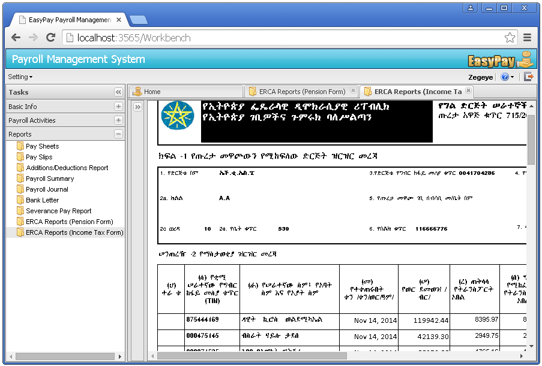

Generating other reports
EasyPay also generates other very important reports that are demanded by the Ethiopian Revenue and Customs Authority (ERCA).
Generating Income Tax Summary Report
This report type generally summarizes and presents the taxable benefits and the income tax associated with them for each employee along with the total number of terminated employees for the selected month.
Steps
Step 1: Click on the Reports menu -> Click on the ERCA Reports(Income Tax Form) sub menu. Then a new page that allows users to select period will be displayed.
Step 4: Select period and Click on the preview button.

Generating Pension Fund Report
This report type shows the Employer and Employee Pension contributions along with the total number of terminated employees for the selected month.
Steps
Step 1: Click on the Reports menu -> Click on the ERCA Reports(Pension Form) sub menu. Then a new page that allows users to select period will be displayed.
Step 4: Select period and Click on the preview button.